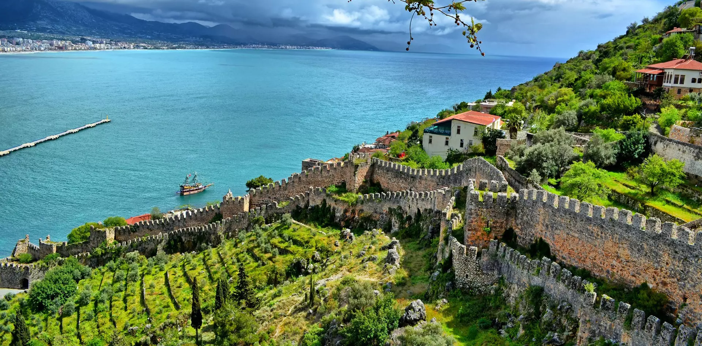
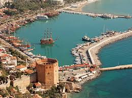
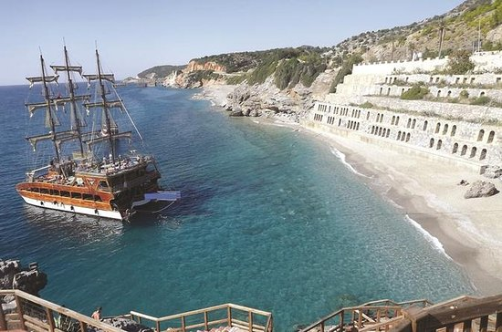
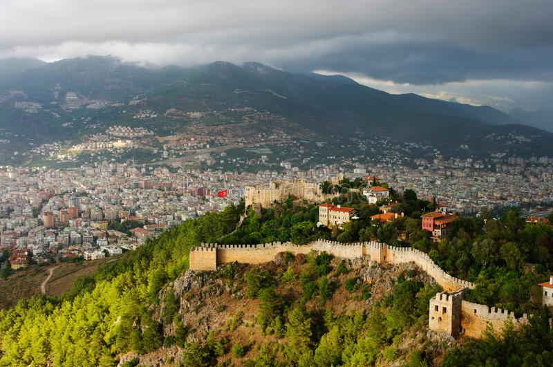
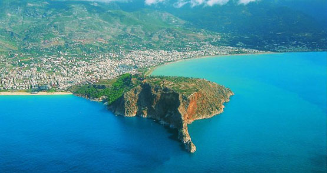

Alanja, nekada Alije, je turistički grad koji se nalazi Turskoj u vilajetu Antalija u Sredozemnom regionu Turske, udaljen 166 km od Antalije. Na južnoj obali Turske, oblast sa gradom i naseljenim mestima obuhvata 1.598,51 km² kao i 248,286 stanovnika (98,627 u gradu) po popisu iz 2010. Alanja se nalazi na malom poluostrvu koje izlazi na Sredozemno more i nalazi se ispod planinskog venca Taurus. Zbog tih prirodno taktičkih prednosti, Alanja je bila regionalna odbrana svih velikih carstava koja su izlazila na Sredozemno more, uključujući i Ptolemejsko kraljevstvo, Seleukidsko carstvo, Rimsko carstvo, Vizantijsko carstvo, Osmanlijsko carstvo i Tursku pod Seldžucima. Alanjin veliki politički značaj je nastao u srednjem veku, kada je Alanja bila teritorija Ikonijskog sultanata pod vladavinom Kajkubada prvog, po kome grad i nosi ime. Njegova zidarska kampanja sačinjava dosta spomenika i zidina u Alanji kao što su Kizil kula-Crvena kula, Tersane i Alanjski zamak. Sredozemna klima, prirodne turističke atrakcije i mnoga istorijska nasleđe čini Alanju popularnim mestom tj. pogodnim za turizam. Letnja sportska dešavanja i kulturne predstave su zauzele bitno mesto u Alanji.
Imena kroz istoriju: Grad je vekovima menjao mnoga imena, ali je zadržao današnje ime. Alanja je na latinskom jeziku znana kao Coracesium ili na grčkom jeziku kao Korakesion, reči koja je preuzeta iz juvijskog jezika čije je originalno značenje Korakassa, što ima značenje kao "ispučen grad“. Pod Vizantijom postalo je poznato kao Kaloronos ili Kalin Oris, koje ima značenje "prelepa planina" na grčkom jeziku. Seldžučka dinastija je preimenovala grad u Alije, izvod iz imena Sultana Kajkubada prvog. Između 13. i 14. veka, Italijanski trgovci su ga prozvali Kandelore ili Kardeloro. Tokom posete Mustafe Kemala Ataturka Alanji 1935, on je dao Aliji njeno poslednje ime iz nove turske abecede i nazvao je Alanja, menjajući pojedina slova, zbog pogrešno napisnaog telegrafa iz 1933.
 Istorija: Ostaci u pećini Kadrini pokazuju zanimanje za mesto današnje Alanje tokom Paleolitske ere, 20.000 godina p. n. e., i arheološki izveštaj pokazuje da je postojala luka u Sideri, južnije od današnjeg grada, tokom bronzanog doba oko 3.000 godina p. n. e. Pločica napisana Feničanskim jezikom izvađena u okrugu datira iz 625. p. n. e., i grad je posebno spomenut u starogrčkom geografskom rukopisu iz 4. v.p. n. e., pod imenom Periplus Pseudo-Skilaksa. Pećine ispod zamka su bile verovatno nastanjene Hetitima i Ahemenidskim carstvom, i bile su prvi sagrađen tokom Helenističkog perioda, nakon osvajanja ove oblasti od strane Aleksandra Velikog. Naslednici Aleksandra Velikog su dodelili Alanju Ptolemeju Soteru posle 323. p. n. e. Njegova dinastija je održavala kontrolu nad većinom Izauriskog naroda, i luka je postala poznato poprište pobune za sredozemne pirate. Grad je odupreo Antiohu III Velikom vladaru susednog Seleukidskog carstva 199. p. n. e., ali je bilo verno piratu Diodotusu Trifonu kada je uzeo Seleukidsku krunu i vladao Seleukidskim kraljevstvom od 142. do 138. p. n. e. Njegov suparnik Antioh VII Sidetes je završio rad tj. izgradnju novog zamka i luke 137. p. n. e. , koja je bila započeta pod Diodotusom.
 